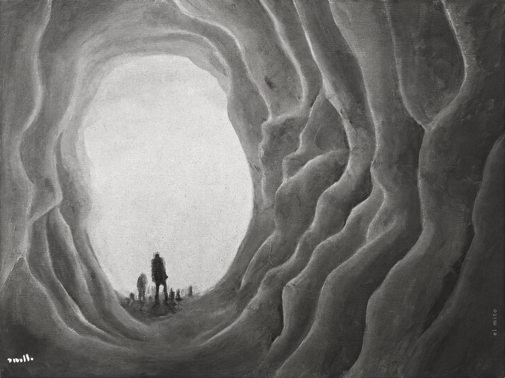

Archivo personal de ensayos, relatos, apuntes y comentarios sobre filosofía, tecnología, cultura e inteligencia. Un espacio para sostener ideas en proceso sin convertirlas demasiado pronto en conclusiones.
-
REC://3F-33
ORIG. 2014
RELATO
STATUS / READABLEDe lo que huyen las polillas
Cinco registros sobre una hora que se repite, una polilla contra el vidrio y algo que espera al otro lado de la ventana.
-
REC://7E-A1
17.09.2026
ENSAYO
STATUS / READABLEDespués del Vacío
Ensayo sobre la autotranscendencia humano–máquina, la transferencia de método, la obsolescencia de la IA y la posibilidad de pensar después de su propia disolución funcional.
-
REC://3C-F2
17.09.2026
ENSAYO
STATUS / READABLEIntimidad digital
La sexualización del no consentimiento en las búsquedas de Internet.
-
REC://9A-18
ORIG. 26.12.2018
COMENTARIO
STATUS / READABLEAcarrearse a uno mismo
Sobre recordar las consecuencias propias y seguir siendo alguien después de ellas.
-
REC://4D-6C
ORIG. 2018
COMENTARIO
STATUS / READABLENo convertirse en el mensaje
Sobre la apropiación de una causa, la comodidad de estar del lado correcto y la dificultad de dejarse interrogar por aquello que se apoya.
-
REC://B7-23
ORIG. 2023
APUNTE
STATUS / READABLEEl mito
Una fantasía epistemológica sobre conocimiento, equilibrio y perturbación.